CocoReally, these are the batteries. They do the pushing.
CocoWe call that push the Pump. A grown-up puts them in.

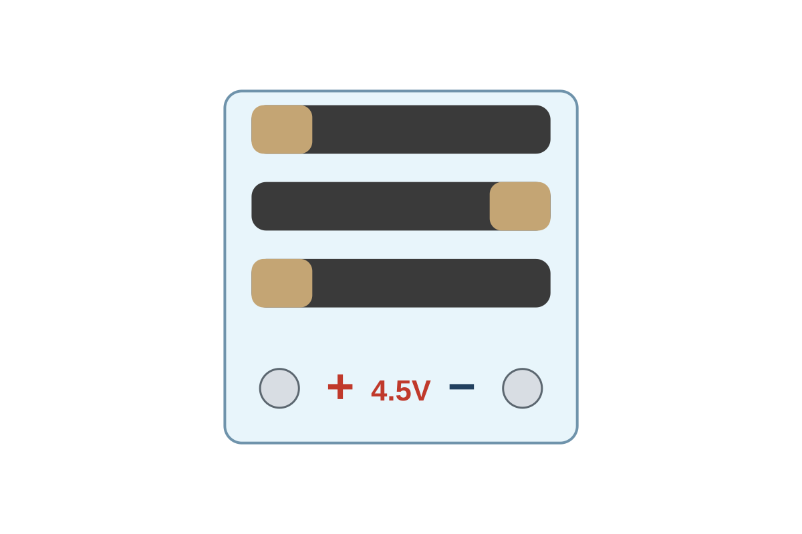
The Pump
Find the block that says B3B
Really: the batteries
In the picture: a pump that pushes the electricity around

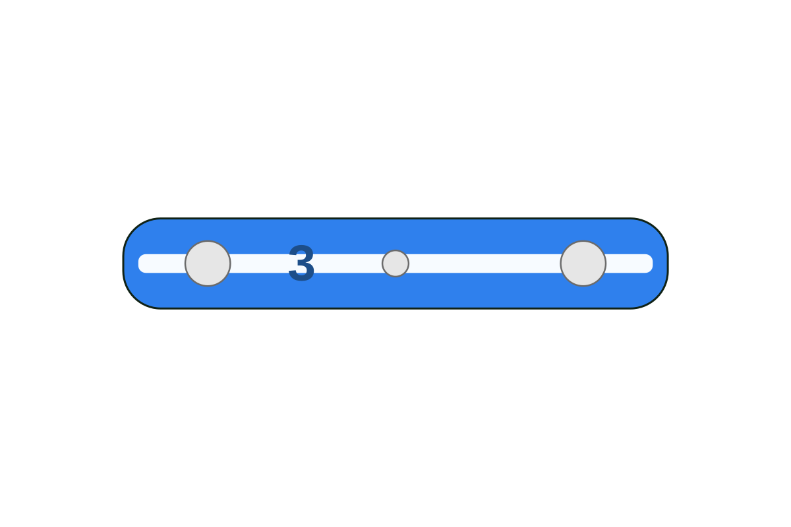
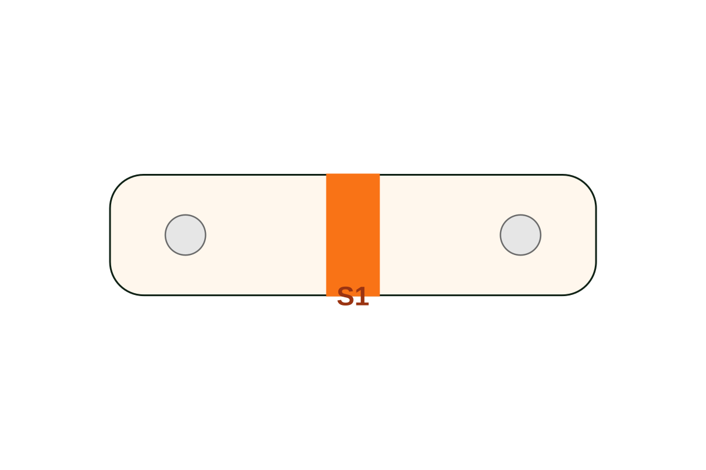
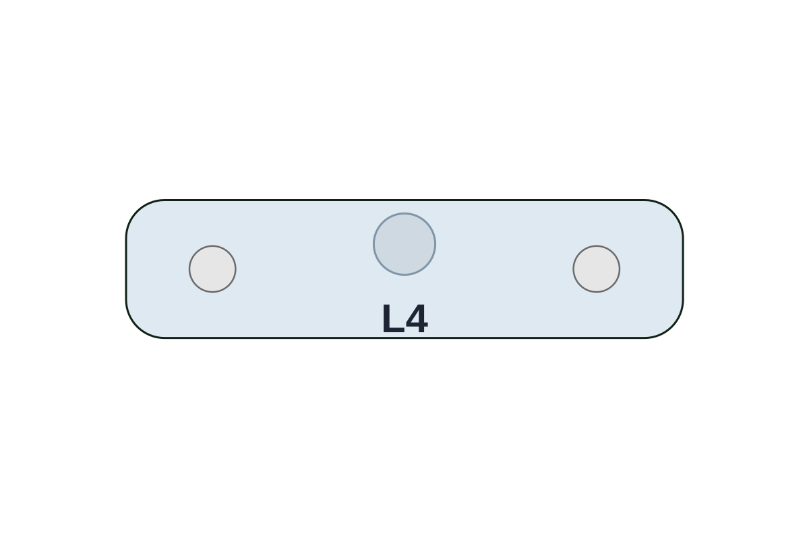
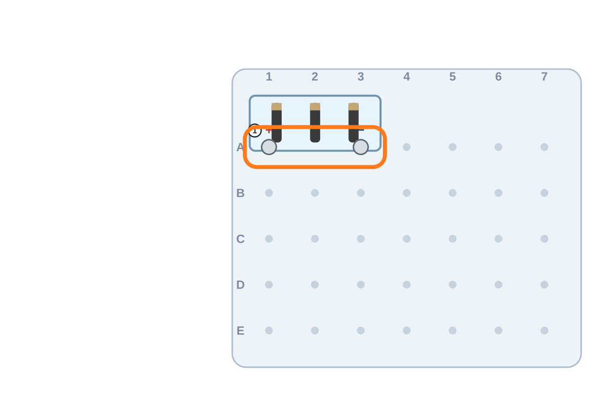
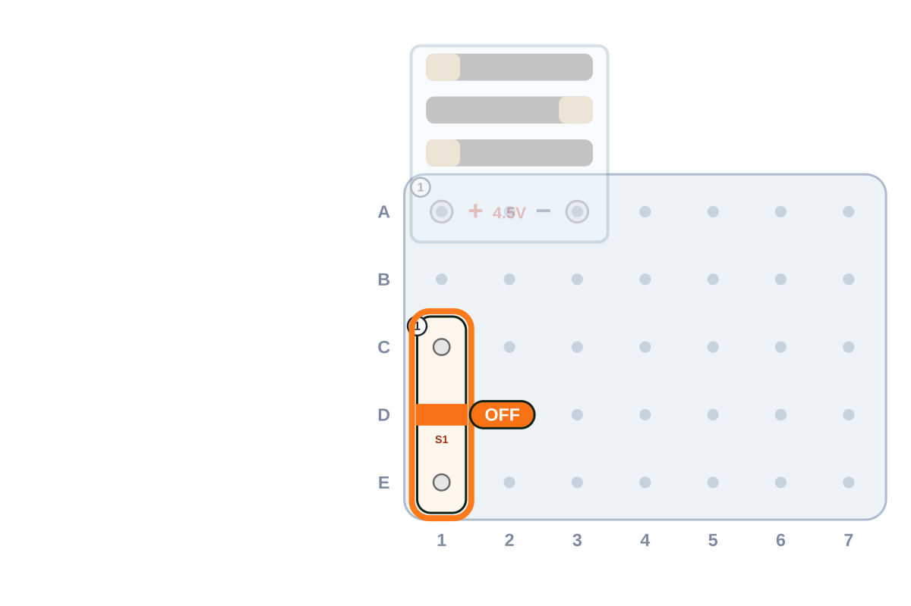
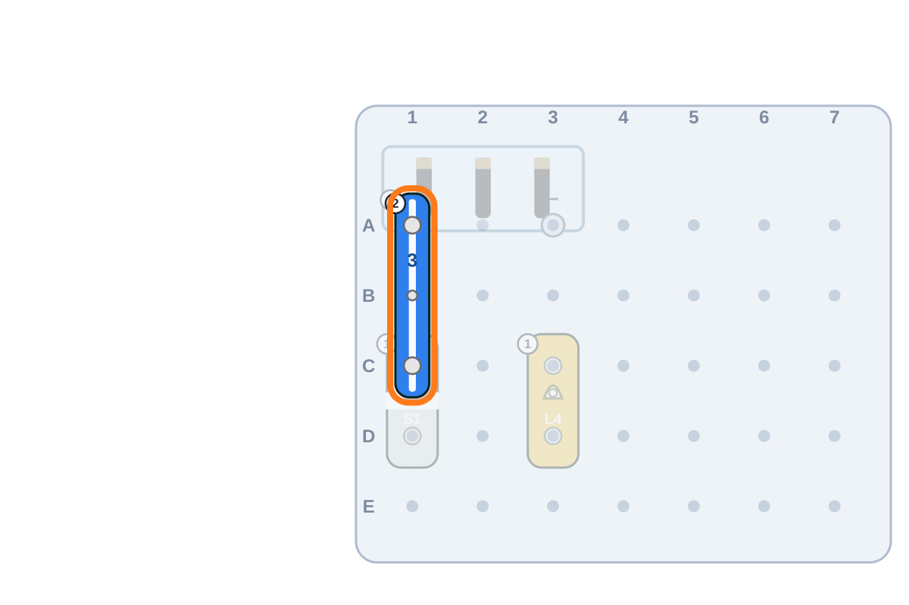
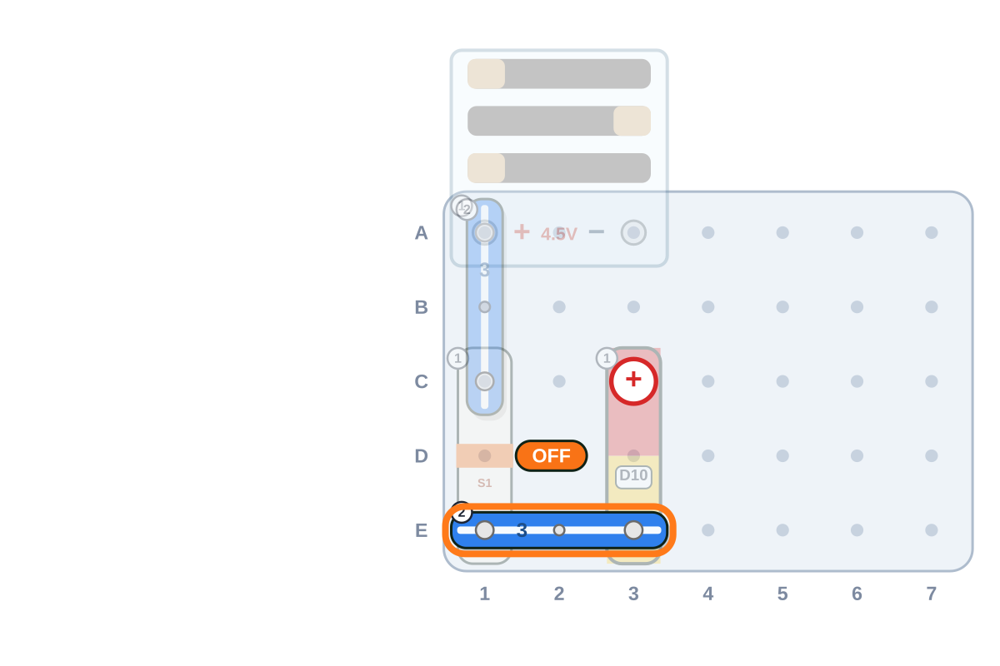
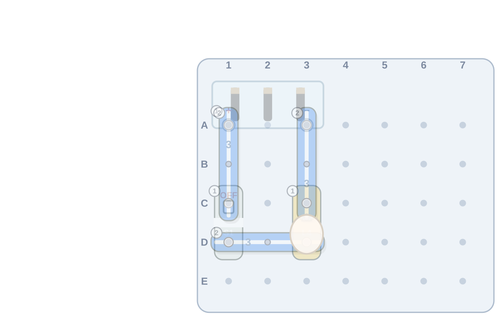

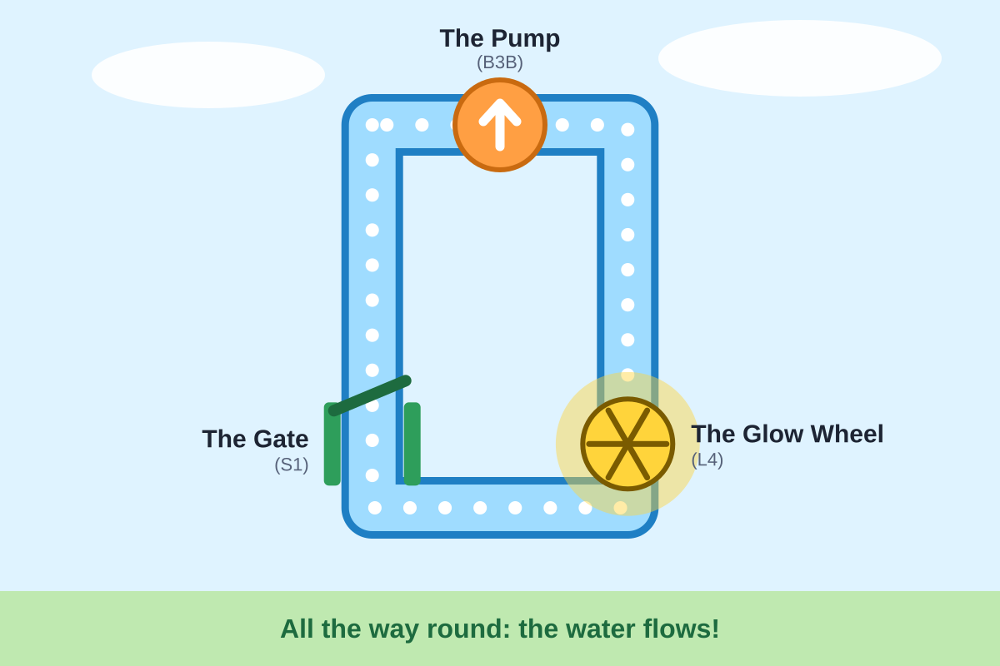
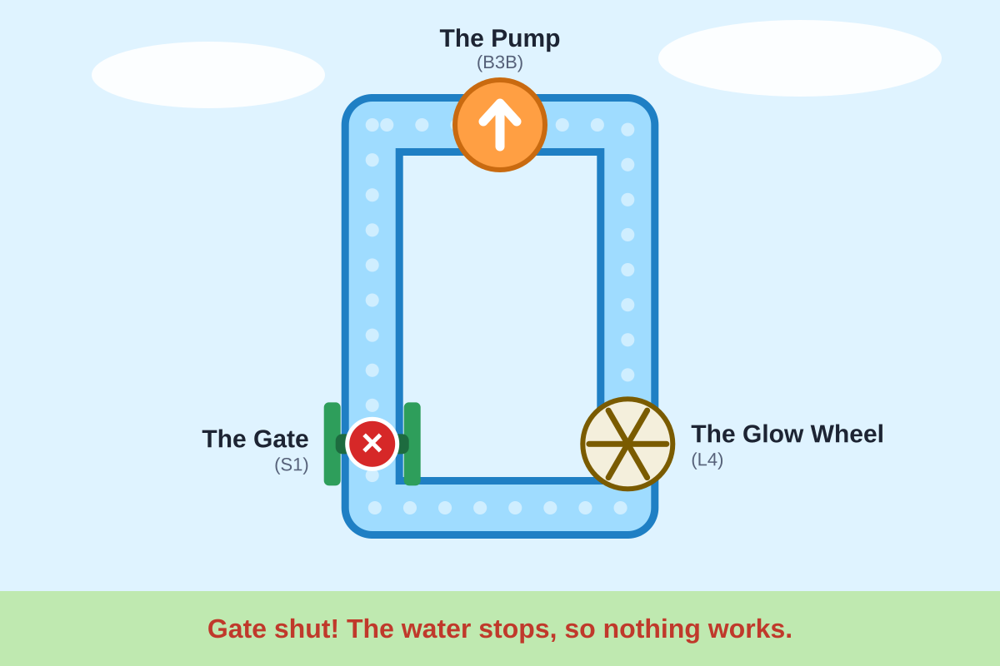

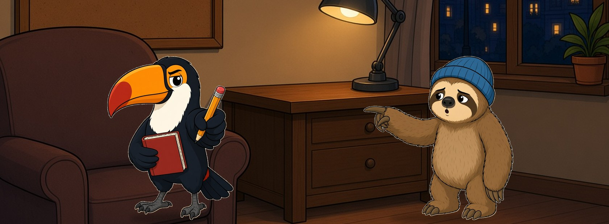

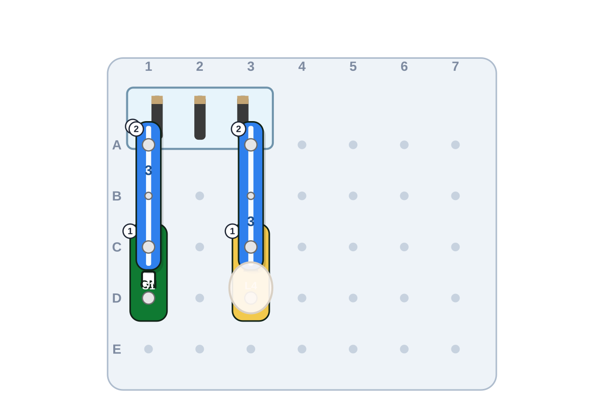
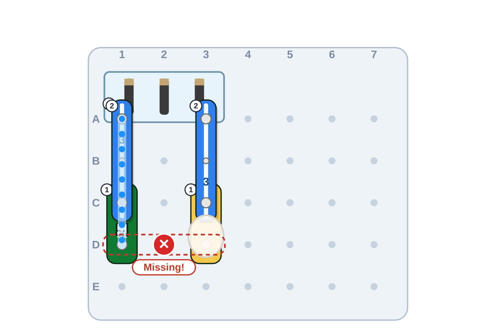

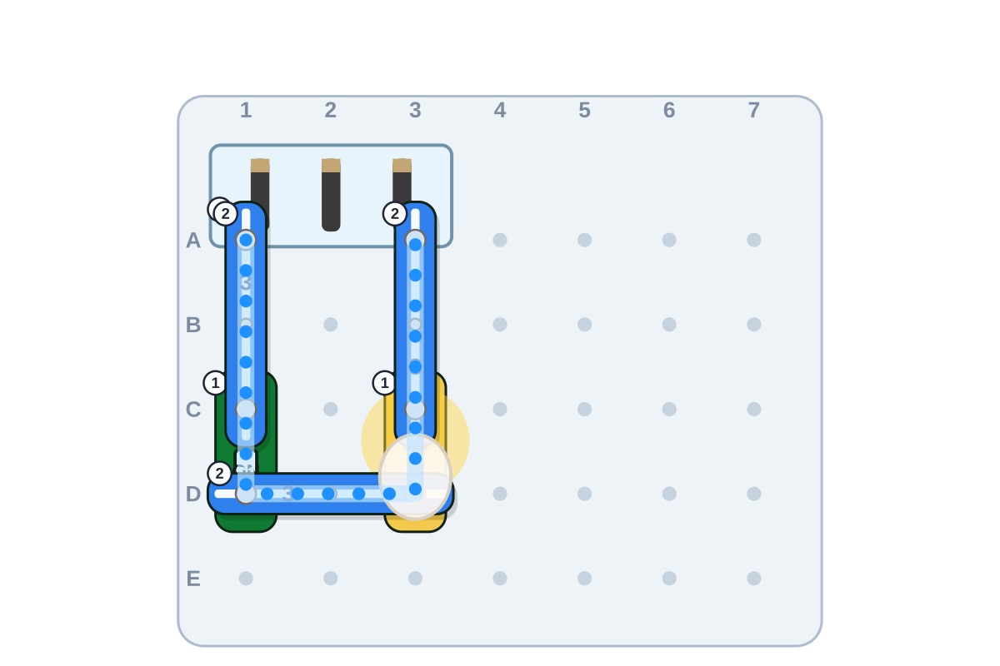


| The Gate (S1) | D10 turned? | what happens |
|---|---|---|
| off | no | dark |
| off | yes | dark |
| on | no | red |
| on | yes | yellow |